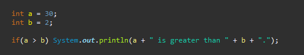
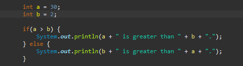

Introduction
Java is a versatile, object-oriented programming language that has been a cornerstone of software development since its release by Sun Microsystems in 1995. Known for its "write once, run anywhere" (WORA) philosophy, Java enables developers to create platform-independent applications that can run on any device equipped with a Java Virtual Machine (JVM). This portability, combined with its robustness, security features, and extensive standard library, has made Java a popular choice for building everything from web applications and mobile apps to enterprise-level systems and embedded devices. Java's syntax is clear and concise, making it accessible to beginners while offering advanced features for experienced developers. It supports multithreading, automatic memory management (garbage collection), and strong type-checking, which contribute to its reliability and performance. Additionally, Java's vast ecosystem of frameworks, tools, and libraries, such as Spring, Hibernate, and Apache Maven, further enhances its capabilities and productivity. Whether you're developing desktop applications, Android apps, or large-scale distributed systems, Java provides the tools and flexibility needed to bring your ideas to life. This documentation will guide you through the core concepts, features, and best practices of Java programming, helping you harness its full potential.Hello World
What would be better then the all-famous 'Hello World' to get your feet wet?class HelloWorld {
public static void main (String[] args) {
System.out.println("Hello, World!");
}
}
Primitive Data Types
The Primitive Data Types in Java are:int
- Size: 32 bits (4 bytes)
- Range -2,147,483,648 to 2,147,483,647
- Use case: you need to store whole (both positive and negative) numbers.
double
- Size: 64 bits (8 bytes)
- Range: ±1.79769313486231570E+308 (Approximately)
- Use case: The default choice for decimal values due to its precision.
float
- Size: 32 bits (4 bytes)
- Range: ±3.40282347E+38F (Approximately)
- Use case: The same as double, but half the size. It is used where memory might be a concern.
long
- Size: 64 bits (8 bytes)
- Range: -9,223,372,036,854,775,808 to 9,223,372,036,854,775,807
- Use case: The same as double, but half the size. It is used where memory might be a concern.
short
- Size: 16 bits (2 bytes)
- Range: -32,768 to 32,767
- Use case: Used for memory-saving purposes when
intis larger than necessary.
byte
- Size: 8 bits (1 bytes)
- Range: -128 to 127
- Use case: Ideal for saving memory in large arrays or when working with raw binary data.
char
- Size: 16 bits (2 bytes)
- Range: 0 to 65,535 (unsigned, represents Unicode characters).
- Use case: Used to store single characters or Unicode values.
boolean
- Size: Not precisely defined (JVM-dependent, typically 1 bit)
- Range:
trueorfalse. - Use case: Represents logical values.
Reference Data Types (not an exhaustive list)
The most common Reference Data Types are:String Represents a sequence of characters (for example: "Hello World!").
Array Represents a collection of elements of the same type: for example a set of integers (
int) or characters (char). Class Represents a user-defined class.
Interface Represents a reference type similar to a class but with abstract methods.
Object The root class for all Java classes. All non-primitive types inherit from
Object. Operators
The more commonly used operators- Arithmetic Operators
+Additionint sum = a + b;-Substractionint diff = a - b;*Multiplicationint product = a * b;/Divisionint quotient = a / b;%Modulus (remainder after division)int remainder = a % b;- Relational Operators
==Equal toif(a == b)!=Not equal toif(a != b)>Greater thanif(a > b)<Less thanif(a < b)>=Greater than or equal toif(a >= b)<=Less than or equal toif(a <= b)- Logical Operators
&&Logical AND, returns true if all the conditions are true, false otherwise.if(a > 0 && b > 0)|Logical OR, returns false if any of the conditions are true, false if all of them are false.if(a > 0 | b > 0)!Logical NOT, negates the condition (truebecomesfalseand vice versa.)if(!(a == b))^Logical XOR, returns true if one condition is true, one is false.if(a > b ^ a > c)- Assignment Operators
+Simple assignmentint a = 10+=Add and assigna += 5(equivalent toa = a + 5;)-=Substract and assigna -= 5(equivalent toa = a - 5;)*=Multiply and assigna *= 5(equivalent toa = a * 5;)/=Divide and assigna /= 5(equivalent toa = a / 5;)%=Modulus and assigna %= 5(equivalent toa = a % 5;)- Unary Operators
+Unary plus (indicates positive value)int a = +10;-Unary minus (negates the value)int a = -10;++Increment (increases value by 1)a++;or++a;--Decrement (decreases value by 1)a--;or--a;!Logical not (inverts boolean value)boolean myCondition = !true;- Bitwise Operators
&Bitwise ANDint result = a & b;|Bitwise ORint result = a | b;^Bitwise XORint result = a ^ b;~Bitwise NOT (complement)int result = ~a;<<Left shiftint result = a << 2;>>Right shiftint result = a >> 2;>>>Unsigned right shiftint result = a >>> 2;- Ternary (Conditional) Operators
? :Ternary operatorint max = (a > b) ? a : b;- Instanced Operators
instanceofChecks object typeif (myObject instanceof String)- Other Operators
- Member access operator (
.): Accesses members (fields of methods) of an object.
Example:obj.method(); - Array index operator (
[]]): Accesses elements of an array.
Example:int x = myArray[position]; - Lambda operator (
->): Used in lambda expressions.
Example:(a, b) -> a + b; - Decision-Making Statements
ifStatementif-elseStatementif-else-ifStatementswitchStatement- Looping Statements
forLoopwhileLoopdo-whileLoop- Enhanced
forLoop (for-each Loop) - Jump statements
breakStatementcontinueStatementreturnStatement- Exception Handling Statements
try-catchBlockfinallyBlockthrowStatementthrowsClause- Labelled Statements
Used for performing basic mathematical operations
Used to compare values and return a boolean result(
true or false)
Used to combine multiple boolean expressions
Used to assign values to variables
Operate on a single operand
Used to perform operation on individual bits of integer types
A shorthand for an
if-else statement.Used to check if an object is an instance of a specific class or interface
Control-Flow
Structures that allow you to make decisions, repeat actions, and manage the flow of execution based on conditions.These statements allow you to execute specific blocks of code based on certain conditions.
Executes a block of code if a specified condition is
true.

Executes one block of code if the specified condition is
true, and another if it is false.

Allows to test for multiple conditions.

Allows the selection and execution of one code block from multiple options based on the value of a
variable or expression.

These statements allow you to repeat a block of code multiple times.
Executes a block of code a specific number of times.

Repeats a block of code as long as a specified condition is
true.

Similar to the
while loop, but the block of code is executed at least once before the condition is checked.

Iterates over the elements in an array or collection.

These statements allow you to transfer control to another part of the program
Terminates the loop or
switch statement and transfers control to the statement immediately following the loop or switch.

Skips the remaining code in the current iteration of a loop and proceeds to the next iteration.

Exits a method and optionally returns a value to the caller.

These statements allow you to handle runtime errors and exceptions.
Catches and handles exceptions that occur in the
try block.

Executes code regardless of whether an exception is thrown or not. It is often used for cleanup tasks.

Explicitly throws an exception.

Declares that a method may throw one or more exceptions.

Allows the lagelling of a block of code and use it with
break, continue, return and goto.